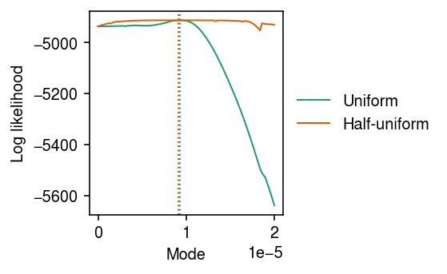
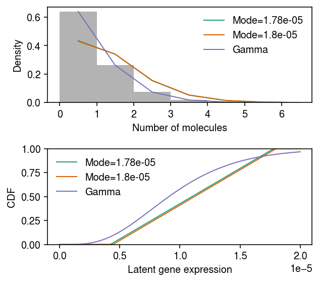

Uniform vs half-uniform mixture prior
Table of Contents
Introduction
We found cases where a unimodal expression model (half-uniform mixture) had a
worse log likelihood than a Gamma expression model. This happened due to a
bug in a previous version of ashr. Verify that it was fixed in version
2.2-51.
Setup
import anndata import numpy as np import pandas as pd import scmodes import scipy.stats as st
import rpy2.robjects.packages import rpy2.robjects.pandas2ri rpy2.robjects.pandas2ri.activate() ashr = rpy2.robjects.packages.importr('ashr')
%matplotlib inline %config InlineBackend.figure_formats = set(['retina'])
import matplotlib.pyplot as plt plt.rcParams['figure.facecolor'] = 'w' plt.rcParams['font.family'] = 'Nimbus Sans'
Results
iPSC example
dat = data['ipsc']() x = dat[:,dat.var['index'] == 'ENSG00000013364'].X.A.ravel() s = dat.obs['size'].values.ravel()

Fit candidate expression models, and report the log likelihood.
fit = { 'Gamma': scmodes.ebpm.ebpm_gamma(x, s), 'Unimodal (halfuniform)': scmodes.ebpm.ebpm_unimodal(x, s, mixcompdist='halfuniform'), 'Unimodal (uniform)': scmodes.ebpm.ebpm_unimodal(x, s, mixcompdist='uniform'), }
pd.Series({
k: fit[k][-1] if isinstance(fit[k], tuple) else fit[k].rx2('loglik')[0]
for k in fit
})
Gamma -4916.603271 Unimodal (halfuniform) -4911.743860 Unimodal (uniform) -4911.814471 dtype: float64
Look at the estimated unimodal models.
g0 = np.array(fit['Unimodal (uniform)'].rx2('fitted_g')) g0[:,g0[0] > 1e-8]
array([[9.26309463e-01, 2.96562998e-02, 4.40342371e-02], [9.24285849e-06, 0.00000000e+00, 0.00000000e+00], [9.24285849e-06, 2.99375891e-05, 3.85096272e-05]])
g1 = np.array(fit['Unimodal (halfuniform)'].rx2('fitted_g')) g1[:,0]
array([0.00000000e+00, 9.08008205e-06, 9.08008205e-06])
g1[:,g1[0] > 1e-8]
array([[4.53314869e-01, 4.74849764e-01, 5.27755773e-02, 1.90597899e-02], [8.16422384e-06, 9.08008205e-06, 9.08008205e-06, 9.08008205e-06], [9.08008205e-06, 9.72769161e-06, 2.98035879e-05, 3.83875450e-05]])
Look at the log likelihood as a function of the mode.
grid = np.linspace(0, 2e-5, 100) llik0 = np.array([scmodes.ebpm.ebpm_unimodal(x, s, mixcompdist='uniform', mode=m).rx2('loglik')[0] for m in grid]) llik1 = np.array([scmodes.ebpm.ebpm_unimodal(x, s, mixcompdist='halfuniform', mode=m).rx2('loglik')[0] for m in grid])
cm = plt.get_cmap('Dark2') plt.clf() plt.gcf().set_size_inches(4, 2.5) for i, (y, l) in enumerate(zip([llik0, llik1], ['Uniform', 'Half-uniform'])): plt.plot(grid, y, c=cm(i), label=l, lw=1) plt.axvline(grid[np.argmax(y)], c=cm(i), lw=1, ls=':', label=None) plt.legend(frameon=False, loc='center left', bbox_to_anchor=(1, .5)) plt.xlabel('Mode') plt.ylabel('Log likelihood') plt.tight_layout()

Look at the fits for two close choices of mode with very different log likelihoods.
fit0 = scmodes.ebpm.ebpm_unimodal(x, s, mixcompdist='halfuniform', mode=grid[88]) fit1 = scmodes.ebpm.ebpm_unimodal(x, s, mixcompdist='halfuniform', mode=grid[89]) pd.Series({ f'{grid[88]:.3g}': fit0.rx2('loglik')[0], f'{grid[89]:.3g}': fit1.rx2('loglik')[0] })
1.78e-05 -4930.230021 1.8e-05 -4936.446796 dtype: float64
pmf = dict() y = np.arange(x.max() + 1) g = np.array(fit0.rx2('fitted_g')) g = g[:,g[0] > 1e-8] a = np.fmin(g[1], g[2]) b = np.fmax(g[1], g[2]) comp_dens_conv = np.array([((st.gamma(a=k + 1, scale=1 / s.reshape(-1, 1)).cdf(b.reshape(1, -1)) - st.gamma(a=k + 1, scale=1 / s.reshape(-1, 1)).cdf(a.reshape(1, -1))) / np.outer(s, b - a)).mean(axis=0) for k in y]) comp_dens_conv[:,0] = st.poisson(mu=s.reshape(-1, 1) * b[0]).pmf(y).mean(axis=0) pmf[grid[88]] = comp_dens_conv @ g[0] g = np.array(fit1.rx2('fitted_g')) g = g[:,g[0] > 1e-8] a = np.fmin(g[1], g[2]) b = np.fmax(g[1], g[2]) comp_dens_conv = np.array([((st.gamma(a=k + 1, scale=1 / s.reshape(-1, 1)).cdf(b.reshape(1, -1)) - st.gamma(a=k + 1, scale=1 / s.reshape(-1, 1)).cdf(a.reshape(1, -1))) / np.outer(s, b - a)).mean(axis=0) for k in y]) comp_dens_conv[:,0] = st.poisson(mu=s.reshape(-1, 1) * b[0]).pmf(y).mean(axis=0) pmf[grid[89]] = comp_dens_conv @ g[0]
cdf = dict() temp = np.linspace(0, 2e-5, 1000) cdf[grid[88]] = np.array(ashr.cdf_ash(fit0, temp).rx2('y')).ravel() cdf[grid[89]] = np.array(ashr.cdf_ash(fit1, temp).rx2('y')).ravel()
cm = plt.get_cmap('Dark2') plt.clf() fig, ax = plt.subplots(2, 1) fig.set_size_inches(4.5, 4) temp = np.arange(x.max() + 1) ax[0].hist(x, bins=temp, color='0.7', density=True) for i, m in enumerate([88, 89]): ax[0].plot(temp + .5, pmf[grid[m]], lw=1, c=cm(i), label=f'Mode={grid[m]:.3g}') gamma_res = scmodes.ebpm.ebpm_gamma(x, s) ax[0].plot(temp + .5, np.array([scmodes.benchmark.gof._zig_pmf(k, size=s, log_mu=gamma_res[0], log_phi=-gamma_res[1]).mean() for k in temp]), lw=1, c=cm(2), label='Gamma') ax[0].legend(frameon=False) ax[0].set_xlabel('Number of molecules') ax[0].set_ylabel('Density') temp = np.linspace(0, 2e-5, 1000) for i, m in enumerate([88, 89]): ax[1].plot(temp, cdf[grid[m]], lw=1, c=cm(i), label=f'Mode={grid[m]:.3g}') ax[1].plot(temp, st.gamma(a=np.exp(gamma_res[1]), scale=np.exp(gamma_res[0] - gamma_res[1])).cdf(temp), lw=1, c=cm(2), label='Gamma') ax[1].legend(frameon=False) ax[1].set_ylim(0, 1) ax[1].set_xlabel('Latent gene expression') ax[1].set_ylabel('CDF') fig.tight_layout()
